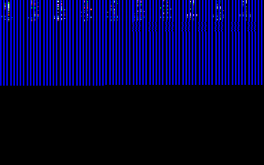

Graphics 2: VGA and SuperVGA
Welcome!
In the previous article, we introduced some concepts pertaining to video devices with an emphasize on VGA on the Video BIOS firmware. In this article, we will look at different hardware and firmware interfaces for video devices for VGA, SuperVGA and Video BIOS support and implement a common video interface in C supporting the interfaces. Here are the topics to be covered.
- VGA hardware
- VGA BIOS
- Vesa BIOS Extensions
- style="margin-bottom: 0.2in">Bochs VBE Interface
Introduction
We first introduce the Video Graphics Array (VGA) standard as it is the most supported on personal computers and one of the oldest. The VGA standard provides a way to interact with video hardware in a standard way, but it is limited to low resolution display modes and lack of graphics acceleration support present in modern display devices. We will look at both the hardware interface and the VGA BIOS firmware interface. The VGA BIOS interface is by far simpler then the VGA hardware interface but can only be used in real or v86 processor modes. The hardware interface can be used from any processor mode.
Then we move on to Vesa BIOS Extensions (VBE). VBE is a standard developed by the Video Electronic Standards Association (Vesa) that provides a standard set of BIOS extensions for supporting high resolution display modes and monitor features. Due to it being a BIOS extension, not all personal computers support it. It also can only be used from real or v86 modes.
In summary, the goal of this chapter is to cover changing the video mode and accessing display memory. By the end of the chapter, you should have a demo built that does just that, either using VGA or SuperVGA. Later chapters will then focus on the graphics (and possibly some SuperVGA hardware graphics support.)
Interfacing with the BIOS
Before we start getting into the main topics of the chapter, we need to take a small detour and take a closer look at the BIOS. You may recall our use of some of these BIOS services for VGA in the previous article. If the software uses any of these services then it must run in real or v8086 mode. This poses a problem for protected mode or long mode software. Thus we need to find a way to resolve this before continuing. If you don't plan on using any BIOS services, however, please feel free to skip this section.
There are two approaches of calling the BIOS from protected mode (not long mode.)
- Drop down to real mode and call the BIOS
- Virtual 8086 mode
The first method is simpler but can be very ugly for more complete designed systems. The second approach is the most commonly used method but is also the hardest; requiring user mode, interrupt dispatching, task switching, and instruction emulation.
Method 1
The first method requires that the software be able to switch to real mode from protected mode when needed. Without certain restrictions applied to the software design (such as not supporting virtual memory or higher half kernel support) this method can become increasingly complicated to support to the point where it is not worth it. It is, however, the simplest method to implement and requires the least amount of additional software support. For these reasons, we opted to go with this method for the associated demos but highly recommend using method 2 when the software system is large enough to warrant the need.
In order to implement this method, we need a routine or a set of routines to act as an interface between 32 bit protected mode and 16 bit real mode. These routines must do the following while preserving routine input and output values.
- Save current system state that must be reserved. In the most basic case, this is the protected mode stack and IDTR.
- Disable hardware interrupts (CLI instruction).
- Reload original IVT. This is done by setting IDTR.size to 0xffff and IDTR.base to 0.
- Perform a jump to 16 bit protected mode.
- Disable protected mode by clearing CR0.PM bit
- Perform a jump to 16 bit real mode code.
- Set all real mode segments, enable interrupts and call BIOS.
- Perform a jump to 32 bit protected mode.
- Restore saved system state. In the most basic case as in (1) this is the selectors, protected mode stack, and IDTR.
This routines can get very complicated as the system becomes more demanding in what it supports. The above list sounds like a lot, but its more tricky then hard—provided the system does not use paging and the kernel image is less then 1MB. In other words, we assume the project base address is 64K and paging is disabled in order to keep the routine relatively simple.
In the demos, the method io_services is used to call the BIOS. It drops into real mode using the steps above. io_services looks like this:
extern void io_services (unsigned int num, INTR* in, INTR* out);
Where num is the interrupt number, in is a pointer to a INTR structure, and out is a pointer to an output INTR structure. INTR is a set of structures that store register values. Both io_services and INTR are fairly large and so will be omitted in the text. Please reference bios.asm in the demos.
Example: This example uses the function io_services and INTR structure to call the BIOS to set the video mode. Note the C code is runs in protected mode.
void vga_set_mode(int mode)
{
/* call BIOS */
INTR in, out;
in.eax.val = mode;
io_services (0x10, &in, &out);
}
If the software is in long mode, the only options is to program the device directly or to write an emulator.
Method 2
The second method is using v8086 mode. This is by far the best long-term way to support calling the BIOS firmware but is also the most demanding. At a minimum, v8086 mode requires that the operating system support the following.
- User mode processes
- Task switching
- Interrupt dispatching
- Instruction emulation
Virtual 8086 mode can only execute as user mode processes. This poses a problem however as user mode processes can not execute kernel mode instructions (like int) and so can not call the BIOS which sort of defeats the purpose. In other words, when the v8086 process executes an int (interrupt) instruction, it triggers a general protection fault (GPF). What can we do to fix this?
We are not entirely out of solutions here. While the v8086 process cannot call the BIOS, the kernel can. When the GPF occurs, the kernel effectively gets called. The kernel GPF handler then can detect what caused the GPF and do something about it like so:
- Check current process.v8086 flag
- If set; call v86_monitor
- If not set, continue with GPF and possibly terminate process
Our v86_monitor is a special function that is called by the kernel GPF handler for all v8086 processes. Now we are getting somewhere; what we have here is that whenever the v8086 process attempts to call the BIOS (or use any kernel mode instruction) the kernel GPF handler gets called which calls v86_monitor to “monitor” the v8086 task.
The v86_monitor implements a v8086 monitor that is responsible for emulating the problem instructions the v8086 task tried to use. For example, the v8086 monitor would detect the problem instruction (it will have the CS:EIP given by the CPU) as an interrupt call and emulate it by invoking IVT [n] where n = BIOS number to call (recall however that the IVT instruction pointers are in segment:offset format not linear.)
Video Graphics Array (VGA)
Readers may skip this section if you only want to look at SuperVGA.
The Video Graphics Array (VGA) is the design of display hardware first introduced in 1987 for the IBM PS/2 computers [1] but has been widely adopted by organizations as a display standard. The highest video mode resolution supported is 640x480x16 color. Due to the widespread adoption by PC manufactures, VGA has become one of the oldest standards still supported by modern PC's.
VGA was followed by IBM's Extended Graphics Array (XGA) standard but extensions implemented by different manufacturers produced SuperVGA adapters that are common in modern PC's. Most SuperVGA cards are backward compatible with the VGA standard.
Please note that this is not going to be an exhaustive explanation of VGA due to its complexity. Please reference resources [2] and [3] for more information on VGA hardware and I encourage reading one of the many large books on VGA.
Video modes
There is a standard set of video modes and mode numbers supported by VGA. The video mode refers to the display configuration and its properties, such as resolution, bit depth (bits per pixel), number of colors, memory mode, etc. Standard video mode numbers are 0h, 1h, 2h, 3h, 4h, 5h, 7h, Dh, Eh, Fh, 10h, 11h, 12h, and 13h. There is nothing special about the mode number itself; it is just used by the video BIOS to refer to a particular video mode. There may be more modes, however they are nonstandard.
| Mode | Resolution | Color depth | Mode | Resolution | Color depth |
|---|---|---|---|---|---|
| 0h | 40x25 Text | 16 Color | Dh | 320x200 | 16 Color |
| 1h | 40x25 Text | 16 Color | Eh | 640x200 | 16 Color |
| 2h | 80x25 Text | 16 Color | Fh | 640x350 | 2 Color |
| 3h | 80x25 Text | 16 Color | 10h | 640x350 | 16 Color |
| 4h | 320x200 | 4 Color | 11h | 640x480 | 2 Color |
| 5h | 320x200 | 4 Gray | 12h | 640x480 | 16 Color |
| 7h | 80x25 Text | 2 Color | 13h | 320x200 | 256 Color |
The highest resolution supported by standard VGA is mode 12h which is 640x480x16 color. (Interesting note, Windows XP logo screen runs in mode 12h.) Higher resolutions can only be obtained using SuperVGA which is described later on.
VGA Firmware
We first look at the firmware interface of VGA, and the facilities provided by the Video BIOS. In the last article we introduced some of the facilities, most notably interrupt 0x10 function 0 to set the video mode. The Video BIOS provides services for setting, getting, and working with VGA hardware through a more abstract interface. Arguably it is far more safer, simpler, and more portable for software to use the video BIOS facilities then it is to directly control the hardware.
Here we present some of the common facilities that software can use for video services. Of course, because these are BIOS interrupts, they can only be used in real or v8086 mode and on systems that have BIOS firmware. Also, they can only be used by kernel mode software.
INT 0x10 Function 0 – Set Video Mode
- Input:
- AH=0
- AL = video mode
- Output:
- AL=video mode flag (Phoenix, AMI BIOS)
- AL = CRT Controller (CRTC) mode byte (Phoenix 386 BIOS v1.10)
Example: This function sets the video mode.
void vga_set_mode (int mode)
{
/* call BIOS */
INTR in, out;
in.eax.val = mode;
io_services (0x10, &in, &out);
}
We can now use the above function to set any VGA BIOS video mode, such as Mode 13h. The result might look something like this.

As you can see from the above image, there is a lot of garbage on the display. This “garbage” is actually what what was in VGA memory before the mode switch. This includes everything from all 4 planes (we will look at these later on) such as any textural characters from plane 1 and the VGA font in plane 2. If we clear the display, all of this is cleared. This is a problem if the software must return back to text mode because by clearing the display the software cleared the VGA font. There are two ways to fix this:
- Upload a new copy of the VGA font from the BIOS
- Save the VGA font before clearing memory and restoring it later.
By performing one of the above the software can switch to a graphics mode and return back to text mode without error.
INT 0x10 Function B – Set Palette (Text modes only)
- Input:
- AH=B
- BH=1
- BL=Palette ID.
- 00h background, green, red, and brown/yellow
- 01h background, cyan, magenta, and white
Example: The following code sets a VGA palette.
void vga_set_palette (int id)
{
/* call BIOS */
INTR in, out;
in.eax.val = 0xB;
in.ebx.val = 0x0100 | id;
io_services (0x10, &in, &out);
}
INT 0x10 Function C – Write pixel
- Input:
- AH=C
- BH=Page number
- AL=Pixel color
- CX=Column
- DX=Row
- Output:
- AL=Pixel color
Example: The following writes a pixel. This might be omitted in the demos as it shouldn't be used; we only provide it for completeness.
void vga_plot_pixel (int col, int x, int y)
{
/* call BIOS */
INTR in, out;
in.eax.val = 0x0C00 | col;
in.ebx.val = 0;
in.ecx.val = x;
in.edx.val = y;
io_services (0x10, &in, &out);
}
Note that some versions of the Bochs emulator do not support this interrupt. It is however implemented for VirtualPC. We can use the above interrupt to plot pixels.
INT 0x10 Function F – Get Video Mode
- Input:
- AH=F
- Output:
- AH=Number of character columns
- AL=Display page number
- BH=Active page
Example: The following code returns the mode information.
void vga_get_mode (unsigned int* col, unsigned int* dispPage, unsigned int* actPage)
{
INTR in, out;
/* sanity check */
if (!col || !dispPage || !actPage)
return;
in.eax.val = 0xf;
io_services (0x10, &in, &out);
*dispPage = out.ax.r.al;
*actPage = out.bx.r.bh;
}
VGA Hardware Interface
The VGA hardware interface is very complex, consisting of five controllers and over a hundred hardware registers accessible from the Port I/O address space. A standard set of register configurations help define the standard VGA video modes we still see today. Due to the use of the Port I/O address space, software can interface with the VGA hardware in any processor mode. Of course, the software must be in supervisor level (ring 0) for the in and out family of instructions to actually interact with the hardware. Thus, only kernel mode software can access VGA hardware. User mode software that attempts it will generate a general protection fault when executing the in or out instruction.
Before looking at the hardware, there is a warning. The warning applies to all display monitors and video cards that may lack protection from invalid data or data outside of the range supported by the device (for example, an excess frequency setting that the device is unable to work with in a safe manner.) Most modern monitors will display an error message or show no output on invalid settings. Make sure to test the driver software in an emulator and virtual environment first and verify the driver software works properly before testing on real hardware.
Video memory
The memory layout of VGA differs depending on the type of video mode is currently active. The VGA supports the following memory layouts.
- Linear
- Planar
- Palette
- 4 Color mode
We will take a look at all of these modes next and when they are used. Knowing the different memory models is important in order to properly read and write to display memory. We will cover linear modes last as it is the most complex. Before that though, we first need to know how to access video memory.
Recall the memory map that we have looked at in the system architecture chapter. Here it is again.
- 0x00000000 - 0x000003FF - Real Mode Interrupt Vector Table
- 0x00000400 - 0x000004FF - BIOS Data Area
- 0x00000500 - 0x00007BFF - Unused
- 0x00007C00 - 0x00007DFF - Our Bootloader
- 0x00007E00 - 0x0009FFFF - Unused
- 0x000A0000 - 0x000BFFFF - Video RAM (VRAM) Memory
- 0x000B0000 - 0x000B7777 - Monochrome Video Memory
- 0x000B8000 - 0x000BFFFF - Color Video Memory
- 0x000C0000 - 0x000C7FFF - Video ROM BIOS
- 0x000C8000 - 0x000EFFFF - BIOS Shadow Area
- 0x000F0000 - 0x000FFFFF - System BIOS
According to the memory map, video memory is mapped into the physical address space at 0xA0000 – 0xBFFFF. This is 0x1FFFF bytes of memory or 131072 bytes which is 128K. According to [2] VGA hardware has up to 256K or memory however only 128K of it is mapped. The unmapped memory is accessible by changing the address decoding mechanism of the VGA (we will not cover that here though.) Graphics mode memory starts at 0xA0000 and may extend to 0xAFFFF, or 64K. Some of the following examples will demonstrate this.
Planar memory modes (16 bit color modes)
VGA memory is referenced as 4 planes each 64k of memory. You can think of them as different memory banks that are connected to each other (although that might not be the case.) Its sort of like having 4 windows on top of each other. Those windows are the planes.
In 16 color modes there are 4 bits per color. The 4 bits are stored at the same location on each plane.
Example: A 4 bit pixel can be stored at plane0[0], plane1[0], plane2[0] and plane3[0]. This displays a single pixel to display memory. Notice that the 4 bit pixel is stored across all 4 planes, where each plane only stores one bit of the pixel. Also notice that the pixel is at the same location (index is 0) of all 4 planes.
We will show an example of how to write a pixel in planar memory modes a little later after reviewing the registers and how to set a video mode. Unfortunately writing a pixel requires also writing to a hardware register to select the plane to write to and thus an example cannot be provided yet.
Palette memory modes (256 color modes)
In palette memory modes, each pixel is represented by a number—an _index—_into a color table. The color table is the palette. Probably most notable is the 256 color mode, where each pixel is 8 bits. Other palette modes include the 16 color (4 bit pixel) and monochrome (1 bit pixel) modes that have only 2 colors.
The color table might look something like this. This is the palette used in a 16 color mode; in fact, its the VGA text mode palette that is the default on system start up.
| Index | Color name | Index | Color name |
|---|---|---|---|
| 0 | Black | 8 | Dark Gray |
| 1 | Blue | 9 | Light Blue |
| 2 | Green | 10 | Light Green |
| 3 | Cyan | 11 | Light Cyan |
| 4 | Red | 12 | Light Red |
| 5 | Magenta | 13 | Light Magenta |
| 6 | Brown | 14 | Yellow |
| 7 | Light Gray | 15 | White |
Lets look at an example of the palette use in text modes.
Note
Recall that in text modes, each character includes a character code (ASCII character typically) and an attribute byte. The attribute byte is an index into the above palette. In other words, if you have worked with text modes in protected mode you have already been working with a palette memory mode!
256 color modes were widely used by DOS video games. This became infamously known as Mode 13h after its standard Video BIOS mode number. Mode 13h is an interesting mode because it is very fast, linear, and can display 256 colors on the screen at once. In other words, video memory in this mode is linear where each pixel is 1 byte and stored right after each other in memory. What makes Mode 13h interesting is that VGA is a planar display device not a linear one.
Example: The following C code defines a function, pixel_256 that plots a pixel in 256 color mode at some x and y location in mode 13h. Recall that mode 13h is 320x200 and so the pitch (here pitch is width) is 320. Also unlike the VGA BIOS interrupt plot pixel service, this one will work in any PC emulator or virtual machine.
#define VGA_VRAM 0xA0000
#define PITCH 320
void pixel_256 (unsigned char color, unsigned int x, unsigned int y)
{
unsigned char* fb = (unsigned char*) VGA_VRAM;
unsigned int offset = y * PITCH + x;
fb [offset] = color;
}
The above example also demonstrates the simplicity of working with Mode 13h. We can render multiple pixels by just writing to them consecutively. In 256 color modes each pixel is represented as a byte so we use unsigned char's.
In palette memory modes, there is a maximum to the amount of colors that can be displayed at once. This is the same as the number of entries in the color table being used for the mode. For example, 256 color mode can only display at most 256 colors on the screen at once. 16 color modes can only display 16 colors. Software could modify the color table itself in order to display different colors.
Linear memory modes
Linear memory modes are the set of video modes that support a linear frame buffer (LFB). Linear memory is an array of consecutive bytes; like an array in C. Mode 13h is an example mode that has a linear memory model. Another example is the infamous Mode X (360x480x256 color) and Mode Q (chain-4 256x256x256 color) which are modified versions of Mode 13h.
Recall that VGA is not a linear device; it does not support linear memory modes. Modes like Mode 13h, Mode X, and Mode Q are all planar modes that configure the hardware in a way that creates the illusion of a linear memory model.
To write a pixel in linear memory modes, all we need to do is calculate the offset of the pixel location and write the pixel to the frame buffer.
Example.: The following code plots a 8 bit pixel in a linear memory mode. This example is the same as the above but is more generic; it can be applied to any mode that has a linear memory model.
#define VGA_VRAM 0xA0000
#define PITCH 320
void pixel_256 (unsigned char color, unsigned int x, unsigned int y)
{
unsigned char* fb = (unsigned char*) VGA_VRAM;
unsigned int offset = y * PITCH + x;
fb [offset] = color;
}
Hardware
The VGA hardware design consists of the following components. Some of these might look familiar.
- CRT Controller
- Sequencer
- Graphics Controller
- RAMDAC
- Video memory
- Attribute Controller
All of the hardware registers are mapped into the I/O port space. That is, we can access them using the in and out family of CPU instructions. Most of the controllers map two registers: an address register and data register. The address register stores an index of a particular register that we want to read or write from, the data register contains the data of that register. This may become more clear as we see some examples.
Before looking at each of these components, we would like to emphasize the complexity of VGA hardware. Entire books have been written that covers VGA in depth; covering all of the details in a single article is a very daunting task. In order to keep the discussion minimal, we will only look at what each component does and the set of registers used by the component. Due to the large number of registers, we will not be describing the registers here. Unfortunately we cannot describe how to set a video mode without having some background in the hardware registers. To rectify this, we present a list of all of the registers and a table of the video mode settings will be listed at the end. This will allow readers to set VGA video modes without having to worry about the details of each register nor its format. We do encourage reading more about each register by referencing [3] and [4] however for anyone that is interested in learning more about VGA.
In short, don't worry to much on the details of the registers. The video mode list will tell you what value to put into what register.
CRT Controller (CRTC)
Warning
Improperly configuring the CRT Controller (CRTC) can potentially damage the video card or attached monitor. Although rare, instances of CRT and LCD monitors have been known to burn out or explode due to improper or erroneous configuration.
The CRT Controller (CRTC) is responsible for controlling the output of video data to the display monitor. It is accessed by an address and data register. Address register is at 3D4h the Data Register is at 3D5h (or 3B4h, 3B5h respectively if Miscellaneous Output Register I/O Address select field is set.) We can select what CRTC register we want to access by using the address register. We can then use the data register to read or write from that CRTC register.
We will not be providing a complete technical review of each register due to the number of registers. Please reference the FreeVGA project page dedicated to describing the CRT registers in detail. If there is demand, we may extend our topic on VGA in the future.
| Register | Description |
|---|---|
| 0 | Horizontal total register |
| 1 | End Horizontal display register |
| 2 | Start horizontal blanking register |
| 3 | End horizontal blanking register |
| 4 | Start horizontal retrace register |
| 5 | End horizontal retrace register |
| 6 | Vertical total register |
| 7 | Overflow register |
| 8 | Preset row scan line register |
| 9 | Maximum scan line register |
| 10 | Cursor start register |
| 11 | Cursor end register |
| 12 | Start address high register |
| 13 | Start address low register |
| 14 | Cursor location high register |
| 15 | Cursor location low register |
| 16 | Vertical retrace start register |
| 17 | Vertical retrace end register |
| 18 | Vertical display end register |
| 19 | Offset register |
| 20 | Underline location register |
| 21 | Start vertical blanking register |
| 22 | End vertical blanking register |
| 23 | CRTC mode control register |
| 24 | Line compare register |
The CRTC registers allow us to control the pixel clock timings of the horizontal and vertical retrace and blanking periods of the display. These timing periods help control the output of the display (the video resolution), and the refresh rate. Other CRTC registers allow us to change the start address of video memory (the preset row scan line and start address registers, hardware cursor location (cursor location registers) and underline (underline location register.) The CRTC mode control register gives us some way of controlling the CRT itself and some addressing modes.
Graphics Controller
The graphics controller is responsible for managing the interface between CPU and video memory. The address register is mapped to 3CEh and the data register is mapped to 3CFh. In order to access the graphics controller registers, write the index of the register into the address register and read or write from the data register.
The following is a list of the standard registers. Please reference the FreeVGA project for a detailed description of each register.
| Register | Description |
|---|---|
| 0 | Set/Reset register |
| 1 | Enable Set/Reset register |
| 2 | Color compare register |
| 3 | Data rotate register |
| 4 | Read map select register |
| 5 | Graphics mode register |
| 6 | Miscellaneous graphics register |
| 7 | Color don't care register |
| 8 | Bit mask register |
Sequencer
The sequencer manages the interface between the video data and RAMDAC. The address register is mapped to 3C4h and the data register is mapped to 3C5h. In order to access the sequencer registers, write the index of the register into the address register and read or write from the data register.
The following is a list of the standard registers. Please reference the FreeVGA project for a detailed description of each register.
| Register | Description |
|---|---|
| 0 | Reset register |
| 1 | Clocking mode register |
| 2 | Map mask register |
| 3 | Character map register |
| 4 | Sequencer memory mode register |
Attribute Controller
The attribute controller consists of 21 registers for the VGA. The controller has two registers mapped into I/O port space, one at 3C0h and the other at 3C1h. Unlike the other controllers, the attribute controller uses the register at 3C0h as both a data write port and address port. The register at 3C1h is the data read register. In order to communicate with the attribute controller, the software should first write a register address to port 3C0h followed by the data to write to that register. Data can be read by writing to port 3C0h and reading from 3C1h after. The attribute address register also has a particular format.
Attribute address register bit format:
- 0-4: address
- 5: PAS
Address refers to a register index to access. Please refer to the following table of registers.
PAS (Palette Address Source) Determines access to palette data by host or EGA display adapter. If it is 0, the host can access the palette RAM and the adapter will disallow display memory from gaining access to the palette. If 1, the display memory can access the palette RAM and the host is disallowed from accessing it.
The attribute controller stores a set of 16 palette registers that map a color index to a color. This small palette is a drawback from EGA. VGA still uses these registers but instead of storing the palette information it stores an address into a second set of color index registers. We won't be covering the details of how it all works – but I encourage reading [4] page 394 for anyone that is interested.
The following is a list of the standard registers. Please reference the FreeVGA project or [4] for a detailed description of each register.
| Register | Description |
|---|---|
| 0-15 | Palette entry register |
| 16 | Mode control register |
| 17 | Overscan color register |
| 18 | Color plane enable register |
| 19 | Horizontal pixel panning register |
| 20 | Color select register |
General Registers / External Registers
These register lists just don't seem to end do they? We have looked at lists of registers for all of the major controllers of VGA however there are more sets of registers for general use and miscellaneous data that are used by the video modes and thus need to be looked at. These registers can be referred to as general registers or external registers.
The following is a list of the standard registers. Please reference the FreeVGA project or [4] for a detailed description of each register. Please note that we assume a color adapter and VGA (not EGA). Monochrome and EGA adapters may use different ports.
| register | Write port | Read port |
|---|---|---|
| Miscellaneous output register | 3C2h | 3CCh |
| Feature control register | 3BAh | 3CAh |
| Input Status #0 register | 3C2h | |
| Input Status #1 register | 3BAh |
Color Registers
These registers allow us the software to manipulate and manage the 256 color palette. They are an important set of registers if working in 256 color modes and may be used after setting the video mode so getting familiar with them is a good idea. You might also be happy to learn that this is the final set of registers that we are going to look at.
The following is a list of the standard registers. Please reference the FreeVGA project or [4] for a detailed description of each register.
| register | Write port | Read port |
|---|---|---|
| PEL address write mode register | 3C8h | 3C8h |
| PEL address read mode register | 3C7h | |
| PEL data register | 3C9h | 3C9h |
| DAC state register | 3C7h | |
| PEL mask register | 3C6h | 3C6h |
Standard video modes
By configuring the video hardware we can define different display modes with different properties. However many modes that the video hardware can support many monitors do not. Other configurations may have undesired effects. Some VGA mode configurations have become a standard; well supported by most monitors. The following is a list of standard video modes and their configurations. Standard video mode numbers are Mode 0h, 1h, 2h, 3h, 4h, 5h, 7h, Dh, Eh, Fh, 10h, 11h, 12h, and 13h. Other notable modes, such as Mode X and Mode Q while well supported are not standard modes.
Please reference [3] or [4] for other lists. The following tables were adopted from pages 304-305 of [4]. The tables are split between the different sets of registers each mode modifies. The top row indicates the mode number, the left column is the index to use to access the particular register. According to [4] the values presented represent the initial mode state the standard video BIOS uses.
In order to set a video mode, the software must disable the video output and write the associated values to all of the hardware registers that it modifies. This sets everything – the read/write modes, address start, horizontal and vertical blanking periods and timing, refresh rate, resolution, graphics mode type, and more.
While every attempt has been made to insure accuracy, there might be some errors that have been undetected in the following tables. The tables were written to match that of which what was presented in [4] but may have errors in the rewrite. We give all credit to the original authors.
General registers
| Index/Mode | 0 | 1 | 2 | 3 | 4 | 5 | 6 | 7 | D | E | F | 10 | 11 | 12 | 13 |
|---|---|---|---|---|---|---|---|---|---|---|---|---|---|---|---|
| 0 | 63 | 63 | 63 | 63 | 63 | 63 | 63 | A6 | 63 | 63 | A2 | A3 | E3 | E3 | 63 |
| 1 | 0 | 0 | 0 | 0 | 0 | 0 | 0 | 0 | 0 | 0 | 0 | 0 | 0 | 0 | 0 |
| 2 | 70 | 70 | 70 | 70 | 70 | 70 | 70 | 70 | 70 | 70 | 70 | 70 | 70 | 70 | 70 |
| 3 | 4 | 4 | 5 | 5 | 4 | 4 | 5 | FF | 4 | 4 | FF | 4 | 4 | 4 | 4 |
Sequence registers
| Index/Mode | 0 | 1 | 2 | 3 | 4 | 5 | 6 | 7 | D | E | F | 10 | 11 | 12 | 13 |
|---|---|---|---|---|---|---|---|---|---|---|---|---|---|---|---|
| 0 | 3 | 3 | 3 | 3 | 3 | 3 | 3 | 3 | 3 | 3 | 3 | 3 | 3 | 3 | 3 |
| 1 | 9 | 9 | 1 | 1 | 9 | 9 | 1 | 0 | 9 | 1 | 1 | 1 | 1 | 1 | 1 |
| 2 | 3 | 3 | 3 | 3 | 3 | 3 | 1 | 3 | F | F | F | F | F | F | F |
| 3 | 0 | 0 | 0 | 0 | 0 | 0 | 0 | 0 | 0 | 0 | 0 | 0 | 0 | 0 | 0 |
| 4 | 2 | 2 | 2 | 2 | 2 | 2 | 6 | 2 | 6 | 6 | 6 | 6 | 6 | 6 | E |
CRTC Registers
| Index/Mode | 0 | 1 | 2 | 3 | 4 | 5 | 6 | 7 | D | E | F | 10 | 11 | 12 | 13 |
|---|---|---|---|---|---|---|---|---|---|---|---|---|---|---|---|
| 0 | 2D | 2D | 5F | 5F | 2D | 2D | 5F | FF | 2D | 5F | FF | 5F | 5F | 5F | 5F |
| 1 | 27 | 27 | 4F | 4F | 27 | 27 | 4F | FF | 27 | 4F | FF | 4F | 4F | 4F | 4F |
| 2 | 28 | 28 | 50 | 50 | 28 | 28 | 50 | FF | 28 | 50 | FF | 50 | 50 | 50 | 50 |
| 3 | 90 | 90 | 82 | 82 | 90 | 90 | 82 | FF | 90 | 82 | FF | 82 | 82 | 82 | 82 |
| 4 | 2B | 2B | 55 | 55 | 2B | 2B | 54 | FF | 2B | 54 | FF | 54 | 54 | 54 | 24 |
| 5 | A0 | A0 | 81 | 81 | 80 | 80 | 80 | FF | 80 | 80 | FF | 80 | 80 | 80 | 80 |
| 6 | BF | BF | BF | BF | BF | BF | BF | FF | BF | BF | FF | BF | B | B | BF |
| 7 | 1F | 1F | 1F | 1F | 1F | 1F | 1F | FF | 1F | 1F | FF | 1F | 3E | 3E | 1F |
| 8 | 0 | 0 | 0 | 0 | 0 | 0 | 0 | FF | 0 | 0 | FF | 0 | 0 | 0 | 0 |
| 9 | C7 | C7 | C7 | C7 | C1 | C1 | C1 | FF | C0 | C0 | FF | 40 | 40 | 40 | 41 |
| A | 6 | 6 | 6 | 6 | 0 | 0 | 0 | FF | 0 | 0 | FF | 0 | 0 | 0 | 0 |
| B | 7 | 7 | 7 | 7 | 0 | 0 | 0 | FF | 0 | 0 | FF | 0 | 0 | 0 | 0 |
| C | 0 | 0 | 0 | 0 | 0 | 0 | 0 | FF | 0 | 0 | FF | 0 | 0 | 0 | 0 |
| D | 0 | 0 | 0 | 0 | 0 | 0 | 0 | FF | 0 | 0 | FF | 0 | 0 | 0 | 0 |
| E | 0 | 0 | 0 | 0 | 0 | 0 | 0 | FF | 0 | 0 | FF | 0 | 0 | 0 | 0 |
| F | 31 | 31 | 59 | 59 | 31 | 31 | 59 | FF | 31 | 59 | FF | 59 | 59 | 59 | 31 |
| 10 | 9C | 9C | 9C | 9C | 9C | 9C | 9C | FF | 9C | 9C | FF | 83 | EA | EA | 9C |
| 11 | 8E | 8E | 8E | 8E | 8E | 8E | 8E | FF | 8E | 8E | FF | 85 | 8C | 8C | 8E |
| 12 | 8F | 8F | 8F | 8F | 8F | 8F | 8F | FF | 8F | 8F | FF | 5D | DF | DF | 8F |
| 13 | 14 | 14 | 28 | 28 | 14 | 14 | 28 | FF | 14 | 28 | FF | 28 | 28 | 28 | 28 |
| 14 | 1F | 1F | 1F | 1F | 0 | 0 | 0 | FF | 0 | 0 | FF | F | 0 | 0 | 40 |
| 15 | 96 | 96 | 96 | 96 | 96 | 96 | 96 | FF | 96 | 96 | FF | 63 | E7 | E7 | 96 |
| 16 | B9 | B9 | B9 | B9 | B9 | B9 | B9 | FF | B9 | B9 | FF | BA | 4 | 4 | B9 |
| 17 | A3 | A3 | A3 | A3 | A2 | A2 | C2 | FF | E3 | E3 | FF | E3 | C3 | E3 | A3 |
| 18 | FF | FF | FF | FF | FF | FF | FF | FF | FF | FF | FF | FF | FF | FF | FF |
Graphics Controller Registers
| Index/Mode | 0 | 1 | 2 | 3 | 4 | 5 | 6 | 7 | D | E | F | 10 | 11 | 12 | 13 |
|---|---|---|---|---|---|---|---|---|---|---|---|---|---|---|---|
| 0 | 0 | 0 | 0 | 0 | 0 | 0 | 0 | 0 | 0 | 0 | 0 | 0 | 0 | 0 | 0 |
| 1 | 0 | 0 | 0 | 0 | 0 | 0 | 0 | 0 | 0 | 0 | 0 | 0 | 0 | 0 | 0 |
| 2 | 0 | 0 | 0 | 0 | 0 | 0 | 0 | 0 | 0 | 0 | 0 | 0 | 0 | 0 | 0 |
| 3 | 0 | 0 | 0 | 0 | 0 | 0 | 0 | 0 | 0 | 0 | 0 | 0 | 0 | 0 | 0 |
| 4 | 0 | 0 | 0 | 0 | 0 | 0 | 0 | 0 | 0 | 0 | 0 | 0 | 0 | 0 | 0 |
| 5 | 10 | 10 | 10 | 10 | 30 | 30 | 0 | 10 | 10 | 0 | 0 | 10 | 0 | 0 | 40 |
| 6 | 0E | 0E | 0E | 0E | 0F | 0F | 0D | 0A | 5 | 5 | 5 | 5 | 5 | 5 | 5 |
| 7 | 0 | 0 | 0 | 0 | 0 | 0 | 0 | 0 | 0 | F | 5 | 0 | 5 | F | F |
| 8 | FF | FF | FF | FF | FF | FF | FF | FF | FF | FF | FF | FF | FF | FF | FF |
Attribute Controller Registers
| Index/Mode | 0 | 1 | 2 | 3 | 4 | 5 | 6 | 7 | D | E | F | 10 | 11 | 12 | 13 |
|---|---|---|---|---|---|---|---|---|---|---|---|---|---|---|---|
| 0 | 0 | 0 | 0 | 0 | 0 | 0 | 0 | 0 | 0 | 0 | 0 | 0 | 0 | 0 | 0 |
| 1 | 1 | 1 | 1 | 1 | 13 | 13 | 17 | 8 | 1 | 1 | 8 | 1 | 3F | 1 | 1 |
| 2 | 2 | 2 | 2 | 2 | 15 | 15 | 17 | 8 | 2 | 2 | 0 | 2 | 3F | 2 | 2 |
| 3 | 3 | 3 | 3 | 3 | 17 | 17 | 17 | 8 | 3 | 3 | 0 | 3 | 3F | 3 | 3 |
| 4 | 4 | 4 | 4 | 4 | 2 | 2 | 17 | 8 | 4 | 4 | 18 | 4 | 3F | 4 | 4 |
| 5 | 5 | 5 | 5 | 5 | 4 | 4 | 17 | 8 | 5 | 5 | 18 | 5 | 3F | 5 | 5 |
| 6 | 6 | 6 | 6 | 6 | 6 | 6 | 17 | 8 | 6 | 6 | 0 | 14 | 3F | 14 | 6 |
| 7 | 7 | 7 | 7 | 7 | 7 | 7 | 17 | 8 | 7 | 7 | 0 | 7 | 3F | 7 | 7 |
| 8 | 10 | 10 | 10 | 10 | 10 | 10 | 17 | 10 | 10 | 10 | 0 | 38 | 3F | 38 | 8 |
| 9 | 11 | 11 | 11 | 11 | 11 | 11 | 17 | 18 | 11 | 11 | 8 | 39 | 3F | 39 | 9 |
| A | 12 | 12 | 12 | 12 | 12 | 12 | 17 | 18 | 12 | 12 | 0 | 3A | 3F | 3A | 0A |
| B | 13 | 13 | 13 | 13 | 13 | 13 | 17 | 18 | 13 | 13 | 0 | 3B | 3F | 3B | 0B |
| C | 14 | 14 | 14 | 14 | 14 | 14 | 17 | 18 | 14 | 14 | 0 | 3C | 3F | 3C | 0C |
| D | 15 | 15 | 15 | 15 | 15 | 15 | 17 | 18 | 15 | 15 | 18 | 3D | 3F | 3D | 0D |
| E | 16 | 16 | 16 | 16 | 16 | 16 | 17 | 18 | 16 | 16 | 0 | 3E | 3F | 3E | 0E |
| F | 17 | 17 | 17 | 17 | 17 | 17 | 17 | 18 | 17 | 17 | 0 | 3F | 3F | 3F | 0F |
| 10 | 8 | 8 | 8 | 8 | 1 | 1 | 1 | 0E | 1 | 1 | 0B | 1 | 1 | 1 | 41 |
| 11 | 0 | 0 | 0 | 0 | 0 | 0 | 0 | 0 | 0 | 0 | 0 | 0 | 0 | 0 | 0 |
| 12 | 0F | 0F | 0F | 0F | 3 | 3 | 1 | 0F | 0F | 0F | 5 | 0F | 0F | 0F | 0F |
| 13 | 0 | 0 | 0 | 0 | 0 | 0 | 0 | 0 | 0 | 0 | 0 | 0 | 0 | 0 | 0 |
| 14 | 0 | 0 | 0 | 0 | 0 | 0 | 0 | 0 | 0 | 0 | 0 | 0 | 0 | 0 | 0 |
To set a video mode, we must set all of the registers the mode modifies in the above tables. The following example illustrates setting the mode.
Example: In order to set a video mode, we need to upload all of the values into the registers associated with that mode. For example, if we have a function, uploadRegisters, that does this, we can set Mode 13h by doing the following.
unsigned char _mode13h = {
/* general registers */
0x63,0,0x70,0x4,
/* sequencer */
0x3,0x1,0xF,0,0xE,
/* CRTC */
0x5F,0x4F,0x50,0x82,0x24,0x80,0xBF,0x1F,0,0x41,
0,0,0,0,0,0x31,0x9C,0x8E,0x8F,0x28,0x40,0x96,0x89,0xA3,0xFF,
/* graphics */
0,0,0,0,0,0x40,0x5,0xF,0xFF,
/* attribute */
0,1,2,3,4,5,6,7,8,9,0xA,0xB,0xC,0xD,0xE,0xF,0x41,0,0xF,0,0
}
/* set mode 13h */
uploadRegisters (&_mode13);
After writing the register values, we have successfully changed video modes.

Recall that we have looked at the planar memory model earlier; we could not complete an example of plotting a pixel until looking at the hardware registers. We now present that example now.
Example: The following code plots a 8 bit pixel in a planar mode.
void pixel_p (unsigned char color, unsigned int x, unsigned int y)
{
unsigned int* fb = (unsigned int*) 0xa0000;
unsigned int offset = y * pitch + (x/8);
bankSwitch (offset >> 16);
/* writes to bit mask register of graphics controller to select plane */
outportb(0x3CE,8);
outportb(0x3CF,0x80 >> (x & 7));
fb [bankOffset] = color;
}
SuperVGA Interface
SuperVGA refers to the class of display hardware that includes SuperVGA (SVGA), and typically also XGA, SXGA, SXGA+, UXGA, QXGA, QSXGA, and other standards that support resolutions to 2560x2048 and higher. SuperVGA began as a set of extensions by manufacturers to VGA and adopted into separate SuperVGA standards that we have today. This means that there is no all encompassing standard for SuperVGA devices. Every SuperVGA card is different and provide different hardware and firmware interfaces. Thus we have a problem. How could we support SuperVGA if there is no standard way of using it? The problem is compounded by the fact that most manufacturers do not release the technical specifications for the cards. Instead they write black box drivers for different operating systems such as Windows and Linux.
Thus, in order for us to support SuperVGA devices we have only two options.
- Write a device driver for each type of display device we want to support.
- Use Vesa Bios Extensions (VBE)
The first option is hard because we need to have the specification to work off of. For devices where we cannot get any specification we have to rely on reverse engineering. The SuperVGA “card” we will look at is the one used in the Bochs emulator. We chose this one because anyone that uses Bochs could use it. The code for the driver will be Bochs specific however.
The second option is by using Vesa Bios Extensions (VBE). VBE is a standard set of BIOS interrupt extensions for SuperVGA hardware. VBE is very simple to work with and creates a single standard interface for working with SuperVGA. It does however require real mode or v8086 mode and not all machines support VBE since it uses BIOS interrupts and is an extension.
Vesa Bios Extensions (VBE) Firmware Interface
Vesa Bios Extensions (VBE) defines a set of BIOS interrupt services for working with SuperVGA modes. VBE is defined in the Vesa Bios Extensions (VBE) Core Standard. (Please reference [5].) Kernel mode software could call the BIOS services in real mode or v8086 mode.
VBE Mode numbers
VBE defines a set of mode numbers in a similar way the video BIOS does. A mode number has the following format.
| Bits | Description |
|---|---|
| 0-8 | Mode |
| 9-13 | Reserved, set to 0 |
| 14 | LFB |
| 15 | DM |
- Mode number is the actual mode number. If bit 8 is set, it is a standard VESA defined mode (more on this later.)
- LFB selects the mode as a Linear Frame Buffer (LFB) or Bank Switching mode. If 0, it uses bank switching and uses the standard VGA frame buffer. If 1, it uses a linear frame buffer.
- DM selects whether or not to clear display memory when setting the mode. If 0, display memory is cleared. If 1, display memory is not cleared.
- VESA defined modes are a standard set of video mode numbers that BIOS venders are recommended to support. The following table lists the graphical modes.
| Mode | Resolution | Color depth |
|---|---|---|
| 100h | 640x480 | 256 |
| 101h | 640x480 | 256 |
| 102h | 800x600 | 16 |
| 103h | 800x600 | 256 |
| 10Dh | 320x200 | 32K |
| 10Eh | 320x200 | 64K |
| 10Fh | 320x200 | 16.8M |
| 110h | 640x480 | 32K |
| 111h | 640x480 | 64K |
| 112h | 640x480 | 16.8M |
| 113h | 800x600 | 32K |
| 114h | 800x600 | 64K |
| 115h | 800x600 | 16.8M |
| 116h | 1024x768 | 32K |
| 117h | 1024x768 | 64K |
| 118h | 1024x768 | 16.8M |
| 119h | 1280x1024 | 32K |
| 11Ah | 1280x1024 | 64K |
| 11Bh | 1280x1024 | 16.8M |
Mode numbers beyond 11Bh can also be defined but are not standard. Thus there can be some support for even higher resolution modes.
Note
The VBE mode number 113h selects 800x600x32K color mode that uses bank switching while the VBE mode 8113h selects 800x600x32 color mode that uses a linear frame buffer (LFB). Remember the mode number format!
VBE Services
We now turn our attention to the VBE BIOS services. Please keep in mind all of these services can be referenced in [5]. We will also provide samples in C. We are only going to look at the three most important services required to set a video mode and display memory access. Please reference the specification (which is one of the easier specifications to read) for other interrupts.
INT 0x10 Function 4F00h – Get VBE Controller Information
- Input:
- AX=4F00h
- ES:DI=Pointer to VbeInfoBlock structure (See following example)
- Output:
- AX=Status
vbeInfoBlock structure has the following format:
typedef struct _vbeInfoBlock {
uint8_t signature[4]; // “VESA”
uint16_t version; // Either 0x0200 (VBE 2.0) or 0x0300 (VBE 3.0)
uint32_t oemString; // Far pointer to OEM name
uint8_t capabilities[4]; // capabilities
uint32_t videoModesPtr; // Far pointer to video mode list
uint16_t totalMemory; // Memory size in 64K blocks
uint16_t oemSoftwareRev;
uint32_t oemVenderNamePtr;
uint32_t oemProductNamePtr;
uint32_t oemProductRevPtr;
uint8_t reserved [222];
uint8_t oemData [256];
} vbeInfoBlock;
The vbeInfoBlock.capabilities field has the following format:
| Bits | Description |
|---|---|
| 0 | D0 |
| 1 | D1 |
| 2 | D2 |
| 3-31 | Reserved |
- D0: If 0, DAC is fixed at 6 bits per color. If 1, DAC width can be switched to 8 bits per color.
- D1: If 0, controller supports standard VGA modes. If 1, controller does not support standard VGA modes.
- D2: If 0, RAMDAC is in normal operation. If 1, the specification tells us to use the blank bit of function 9.
The following example demonstrates calling this interrupt:
There really isn't much to say here. To call the interrupt, we call our rm_bios routine with the structure. SEG and OFFSET are macros that calculate the real mode segment and offset respectively. This is used to convert the 32 bit linear address into a 16 bit segment:offset address when giving it to the BIOS.
void vbe_get_descr (vbeInfoBlock* descr)
{
INTR in, out;
/* sanity checks */
if (!descr)
return;
/* call BIOS */
in.eax.val =0x4F00;
in.es = SEG((unsigned int) descr);
in.edi.val = OFFSET((unsigned int) descr);
io_services (0x10, &in, &out);
}
INT 0x10 Function 4F01h – Get VBE Mode Info
- Input:
- AX=4F01h
- CX = Mode number (recall the format of a VBE mode number!)
- ES:DI=Pointer to ModeInfoBlock structure (See following example)
- Output:
- AX=Status
ModeInfoBlock has the following structure: (Due to the size of the structure we will not be describing all of the members. Important members that may be described in later chapters are commented.)
typedef struct _modeInfoBlock {
uint16_t attributes;
uint8_t windowA, windowB;
uint16_t granularity;
uint16_t windowSize;
uint16_t segmentA, segmentB;
uint32_t winFuncPtr; /* ptr to INT 0x10 Function 0x4F05 */
uint16_t pitch; /* bytes per scan line */
uint16_t resolutionX, resolutionY; /* resolution */
uint8_t wChar, yChar, planes, bpp, banks; /* number of banks */
uint8_t memoryModel, bankSize, imagePages;
uint8_t reserved0;
uint8_t readMask, redPosition; /* color masks */
uint8_t greenMask, greenPosition;
uint8_t blueMask, bluePosition;
uint8_t reservedMask, reservedPosition;
uint8_t directColorAttributes;
uint32_t physbase; /* pointer to LFB in LFB modes */
uint32_t offScreenMemOff;
uint16_t offScreenMemSize;
uint8_t reserved1 [206];
} modeInfoBlock;
The following example demonstrates calling the interrupt:
Example: The following function uses the above interrupt for basic bank switching. Note the use of SEG and OFFSET to convert the 32 bit linear address of out to a 16 bit segment:offset far pointer.
void vbe_get_mode (int mode, modeInfoBlock* descr)
{
INTR in, out;
/* sanity check */
if (!descr)
return;
/* call BIOS */
in.eax.val = 0x4F01;
in.ecx.val = mode;
in.es = SEG ((unsigned int)descr);
in.edi.val = OFFSET((unsigned int)descr);
io_services (0x10, &in, &out);
}
INT 0x10 Function 4F02h – Set VBE Mode
The final interrupt that we will look at allows us to set the display mode. This can be used to set any VGA and VBE defined SuperVGA mode as well as extended modes that are not standard.
- Input:
- AX=4F02h
- BX=Mode number (remember the VBE mode format!)
- Output:
- AX=Status
The following function uses the above interrupt to set a VBE mode:
void vbe_set_mode (int mode)
{
/* call BIOS */
INTR in, out;
in.eax.val = 0x4F02;
in.ebx.val = mode;
io_services (0x10, &in, &out);
}
Calling vbe_set_mode allows us to set any VBE defined mode and yields us the following result.
Demo running in SuperVGA Mode 118h (1024x768):
VBE Display Memory
VBE supports two standard approaches used in SuperVGA for display memory: Linear Frame Buffer (LFB) and bank switching. You may recall that we can try to set any video mode supported by VBE with both of these. These are just different ways of accessing display memory. We will look at how to work with both types of modes in this section.
Linear Frame Buffer (LFB) Modes
In LFB modes, all of video memory is mapped into the physical address space typically at a high address in the 3GB-4GB range (assuming IA32 architecture.) Display memory is linear like an array in C. We can read or write to it by just reading or writing from a pointer and can access all of video memory. In VBE, we can get this pointer by calling INT 0x10 Function 4F01h to get the modeInfoBlock structure of the current mode. The pointer to display then is just at modeInfoBlock.physbase.
The following C code plots a 16 bit red-green-blue (RGB) pixel to display:
void pixel_16RGB (unsigned short color, unsigned short x, unsigned short y)
{
unsigned short* fb = (unsigned short*) _modeInfo.physBasePtr;
unsigned short offset = x + y * (_modeInfo.bytesPerScanLine / 2);
fb [offset] = color;
}
Display memory in LFB modes can only be accessed from protected or long modes due to the amount of display memory mapped. In real mode the only way of accessing display memory of high resolution modes is using bank switching.
Bank switching
Modes that use bank switching always have 64K of display memory mapped at the VGA memory space at 0xa0000 physical address. This 64k block of display memory is called a bank. The software could only access a single bank at a time and so cannot access all of display memory. The software has to switch banks when needed to access all of display memory.
In other words, Bank 0 refers to bytes 0-64K of display memory, Bank 1 refers to bytes at 64K-128K of display memory, and so on. So by switching between banks the software can access all of display memory (no matter how high of resolution) through this 64K “window”.
The following code plots an 8 bit RGB pixel in a bank switching mode:
void pixel_8RGB (unsigned char color, unsigned short x, unsigned short y)
{
unsigned char* fb = (unsigned char*) 0xa0000;
unsigned int offset = x + (long)y * _modeInfo.bytesPerScanLine;
vbe_bankSwitch (offset >> 16);
fb [offset & 0xffff] = color;
}
Bank switching modes are typically more slower because they require more calculations. That is, the software not only needs to calculate the location of a pixel on screen but also its offset within a bank and the bank to switch to. This same calculations apply to reading from display memory. Bank switching modes however can be used in real mode or v86 mode since they only map 64K of display memory.
Under VBE, software could switch banks by calling INT 0x10 Function 0x4F05 – Display Window Control. It can also be called directly (as is recommended by the VBE specification) by calling INT 0x10 Function 0x4F01 – Get VBE Mode Information and calling VbeModeInfo.WinFuncPtr.
INT 0x10 Function 4F05h – Display Window Control
Sets or gets the display bank. Can also be called from VbeModeInfo.WinFuncPtr.
- Input:
- AX=4F05h
- BH=0 (Set memory window), 1 (Get memory window)
- BL=0 (Window A), 1 (Window B)
- DX=Window number in window granularity units. Only used when BH=0 (Set function)
- Output:
- AX=Status
- DX=Window number in granularity units. Only used when BH=1 (Get function)
The following function uses the above interrupt for basic bank switching: (Notice that we call the interrupt twice for window A and window B. This is because, according to the standard, some VBE implementations might have separate read and write windows)
void vbe_bankSwitch (int bank)
{
INTR in, out;
bank <<= bankShift;
in.eax.val=0x4F05;
in.ebx.val = 0; /* BH=0 (Set memory window) BL=0 (Window A) */
in.edx.val = bank;
io_services (0x10, &in, &out); /* call BIOS */
in.eax.val=0x4F05;
in.ebx.val = 1; /* BH=0 (Set memory window) BL=1 (Window A) */
in.edx.val = bank;
io_services (0x10, &in, &out); /* call BIOS */
}
Bochs VBE Interface
The Bochs emulator provides an alternative method of setting VBE modes directly without having to call the firmware. Although the support is limited, it does provide us a semi-portable method (only requires a compatible Bochs emulator) for working with high resolution graphics.
Example: The following functions can be used to set any VBE mode supported by Bochs:
#define VBE_DISPI_IOPORT_INDEX 0x01CE
#define VBE_DISPI_IOPORT_DATA 0x01CF
#define VBE_DISPI_INDEX_ID 0x0
#define VBE_DISPI_INDEX_XRES 0x1
#define VBE_DISPI_INDEX_YRES 0x2
#define VBE_DISPI_INDEX_BPP 0x3
#define VBE_DISPI_INDEX_ENABLE 0x4
#define VBE_DISPI_INDEX_BANK 0x5
#define VBE_DISPI_INDEX_VIRT_WIDTH 0x6
#define VBE_DISPI_INDEX_VIRT_HEIGHT 0x7
#define VBE_DISPI_INDEX_X_OFFSET 0x8
#define VBE_DISPI_INDEX_Y_OFFSET 0x9
#define VBE_DISPI_DISABLED 0x00
#define VBE_DISPI_ENABLED 0x01
#define VBE_DISPI_GETCAPS 0x02
#define VBE_DISPI_8BIT_DAC 0x20
#define VBE_DISPI_LFB_ENABLED 0x40
#define VBE_DISPI_NOCLEARMEM 0x80
void BlBochsVbeWrite (uint16_t index, uint16_t value)
{
WRITE_PORT_USHORT(VBE_DISPI_IOPORT_INDEX, index);
WRITE_PORT_USHORT(VBE_DISPI_IOPORT_DATA, value);
}
void BlBochsSetMode (uint16_t xres, uint16_t yres, uint16_t bpp)
{
BlBochsVbeWrite (VBE_DISPI_INDEX_ENABLE, VBE_DISPI_DISABLED);
BlBochsVbeWrite (VBE_DISPI_INDEX_XRES, xres);
BlBochsVbeWrite (VBE_DISPI_INDEX_YRES, yres);
BlBochsVbeWrite (VBE_DISPI_INDEX_BPP, bpp);
BlBochsVbeWrite (VBE_DISPI_INDEX_ENABLE, VBE_DISPI_ENABLED | VBE_DISPI_LFB_ENABLED);
}
Recall that there is no standard Super VGA hardware interface. That is, this method is specific to Bochs and may not work in other environments or platforms. Because we assume most readers will be using Bochs as the primary emulator, this is the method we will use in order to maintain the highest form of compatibility. This method is also the simplest.
For higher compatibility however, it is recommended to use virtual 8086 mode to utilize VBE services directly.
Demos
There are multiple demos that are planned for release for this article. These are a VGA BIOS demo, VBE SuperVGA demo, and VGA hardware demo.
Conclusion
We have covered a lot in this chapter including an introduction to the VGA BIOS, VGA hardware, SuperVGA, and VESA BIOS Extensions. We now have covered all of the material needed for switching into low and high resolution graphics modes that will be needed in later chapters. The next few chapters will be focused on the actual graphics rendering and pipeline with possibly some SuperVGA bits thrown in. We might begin with basic primitives and graphics rendering in the next article and transformations.
The method we will be using in later demos is the last one presented here, the Bochs VBE Interface. This allows us to use high resolution LFB modes for later articles with the assumption that most readers will be using Bochs. Any new code however added in later articles will be hardware interface independent for the most part; that is, you can use any method that you want to set the display mode and can still follow the next few articles that will focus more on graphics.
Resources
The following links were referenced to provide more through and accurate information. Please reference them for additional information.
- http://en.wikipedia.org/wiki/Video_Graphics_Array
- http://www.osdever.net/FreeVGA/vga/vga.htm
- http://wiki.osdev.org/VGA_Hardware
- Programmer's Guide to the EGA, VGA, and Super VGA Cards (3rd Edition)
- VESA Bios Extensions (VBE) 2.0 Standard